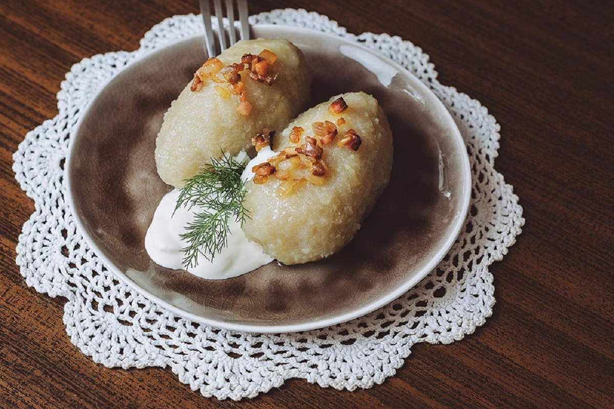

Fun fact about cepelinai!
The dish is named after the inventor of the zeppelin, Count Ferdinand von Zeppelin, because of their resemblant shape to the airship. They were originally called didžkukuliai which, if you split the word up, translates to "big (didž) dumplings (kukuliai)"

-
List of ingredients
- 500g of beef or pork mince
- 3 small onions
- 2 garlic cloves
- 1 medium egg
- 150g of smoked pancetta
- 2.5kg of potatoes
- 2 tablespoons of potato starch
- lemon juice
- a handful of dill
- salt and pepper to taste
- cooking oil
- (Optional) sour cream, to serve
-
Cooking
-
- Take your onions and dice them. Chop the garlic up as well. Then cook them over a medium heat in a frying pan using cooking oil, until they've softened. Then, take half of it from the pan and put it in a bowl to cool. When its cool, add the mince, egg, salt, and pepper, and mix together. Take the rest of the cooked onion and garlic and set aside in another bowl for later.
- Take the same pan, heat the remaining oil in it, and fry the pancetta for a few minutes over medium heat. When the fat starts to melt, add the onion and garlic that was set aside earlier and cook for about 8-10 minutes until golden in color; then remove it from the heat and set it aside for later. This will be the topping of the dish.
- Take one third of the potatoes, peel them, and chop them into 4 pieces. Then put them in a large pan of salted water. Bring this toa boil, and let it simmer for 15 minutes until the potatoes are cooked. Then use a colander to drain the potatoes and leave them to steam-dry for around 5 minutes. After that, crush the potatoes as smoothly as you possible can using a potato masher.
- Take the remaining raw potatoes, peel them, and grate them using a food processor. Take these potatoes and squeeze them through a muslin/tea towel over a bowl to rid of as much liquid as possible. Once you,ve done that, set the bowl with the liquid aside to let the potato starch seperate from the liquid at the bottom of the bowl. Once that is finished, stir in the lemon juice (which will stop the cepelinai from going dark), and add the cooked potato to the raw potato, along with the 2 tablespoons of starch. Then, season and mix well. This will be the outer-part of the cepelinai.
- Assembling the cepelinai is then easy: bring a large pan of salted water to boil; then wet your hands (for easier handling) and take the potato mixture and shape them into palm-sized 2cm thin cakes. Then take the meat and add it to the cakes, and then encase the meat using the potato mixture and roll until they are shaped like large eggs. Last but not least, add them to the simmering water one at a time, and cook them for 20-25 minutes. You'll know they're done cooking when they float to the surface.
- To serve, warm up some of the pancetta, add two cepelinai to a plate, top with the pancetta and some chopped dill, and serve with sour cream (if you wish to do so).
-
-
Cultural Importance
This classic dish has evolved from being a simple peasant meal into a well known and treasured dish that has spread nation-wide. Today, cepelinai aren't just a meal, but a symbol of Lithuanian identity and heritage